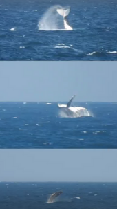
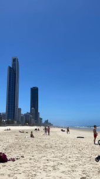
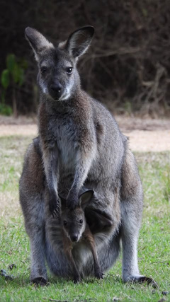
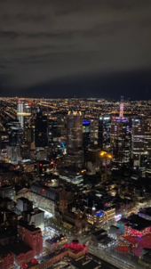
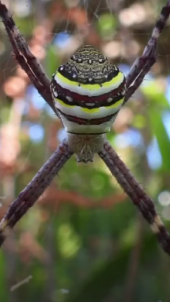

L'Australie
J’ai parcouru la côte est de Australie, de Melbourne à Brisbane, principalement en road trip, à bord d’un 4x4. Ce voyage a été une véritable immersion dans un mode de vie différent, fait de liberté, d’adaptation et de débrouille.
Sur place, j’ai travaillé en restauration à Sydney, tout en alternant travail et exploration. J’ai sillonné des paysages sauvages et observé une faune impressionnante : kangourous, varans, dauphins, requins, baleines, serpents…
J’ai également eu l’opportunité de participer à un rituel aborigène, une expérience marquante de respect des traditions et des cultures ancestrales.
Enfin, j’ai assisté à l’Australian Open 2024, ajoutant une dimension culturelle et internationale à ce séjour.
Ce voyage m’a appris l’autonomie, la gestion de l’imprévu et la capacité à travailler et vivre loin de mes repères.
|  |  |  |  |  |